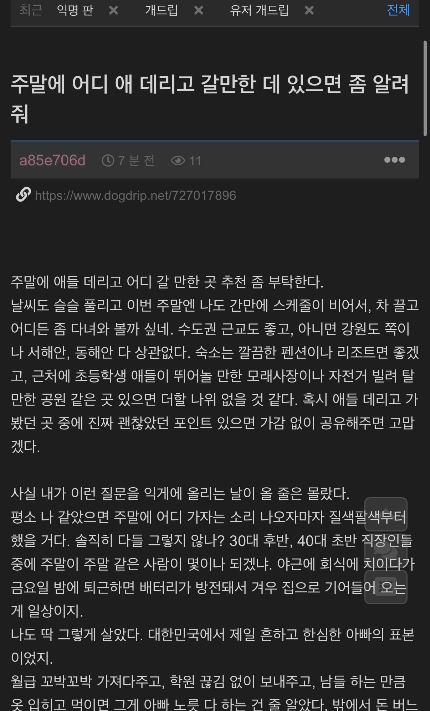
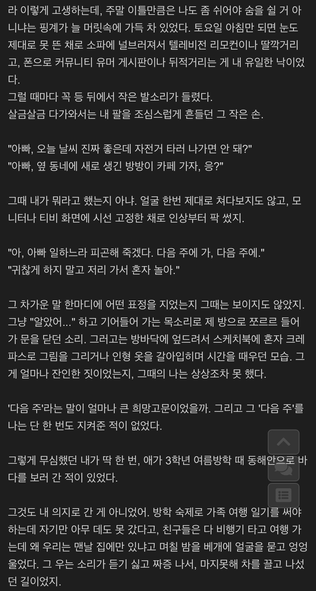
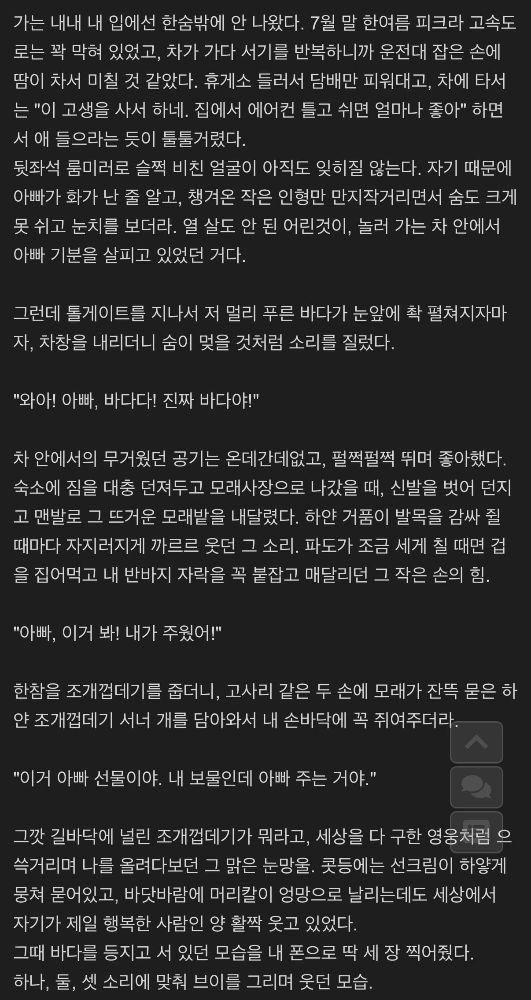
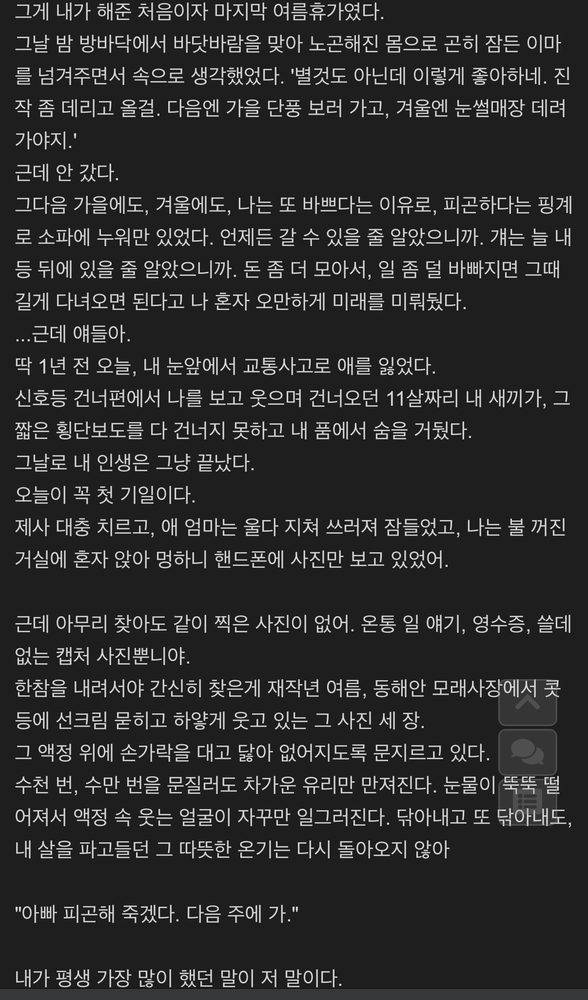
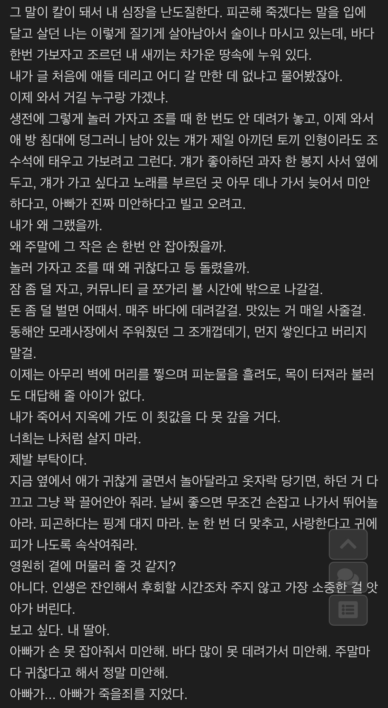
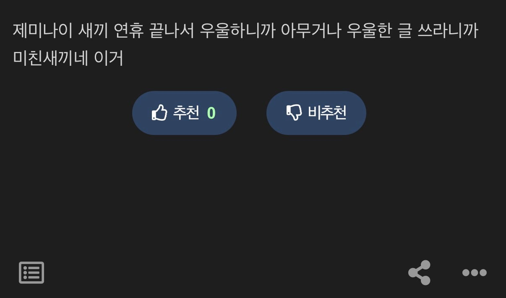

미친새끼인가 ㅋㅋㅋㅋ






미친새끼인가 ㅋㅋㅋㅋ
너무 클리셰덩어리긴 했어
아니 시발롬아 우울한것도 정도것 우울한 글을 써야지 ...
처음부터 몇줄 읽자마자 소설인줄 알았음
ㅋㅋㅋㅋㅋㅋ 개웃기네 주말에 제발 좀 가족나들이 가고 카페에 쇼핑좀 가자고 그렇게 졸라도 자식놈이 눈하나 깜짝안하고 집이 좋다고 그러는데
너무 다행이다 이씨발새끼야
이 씨발 다행이다
와 다행이다 소설이엿네
구글 풀매수 간다 ㅋㅋ
중간부터 주작같더라니 쇠냄새였노 ㅅㅂㅋㅋㅋㅋ
시발 주작이라 다행이다 ㅋㅋㅋㅋ
씨발놈아 다행이다 ㅋㅋㅋㅋ 아오 시발
아이 씨발넘이
뭔 30년전 아빠 얘길 하고 있나 했는데 역시나
하 십...다행이다
ㅋㅋㅋㅋㅋㅋ시발 감정이 없는 새끼라 그런가 보법이 다르네ㅅㅂㅋㅋㅋㅋㅋ
아오 씨발 진짜ㅋㅋㅋㅋㅋㅋㅋㅋㅋㅋㅋ개새끼야
시발 실화가 아니라 존나 다행이다. 인간에게 교훈까지주시는 AI느님
솔직히 애 죽고나서 뭐 깨달은척하는게 ㅈ같았는데, AI였구나. 자기앤데 ㅅㅂ 귀찮아하는거 ㅈ같음 낳지말던지
글에서 쇠냄새가 너무 나는게 대사를 쌍따옴표로 너무 자주 넣잖아 ㅅㅂㅋㅋㅋㅋㅋ
제미나이 새끼 애안키워본 티가나는구만. 저리 브레이브한 아빠가 있다고? ㅋㅋㅋ